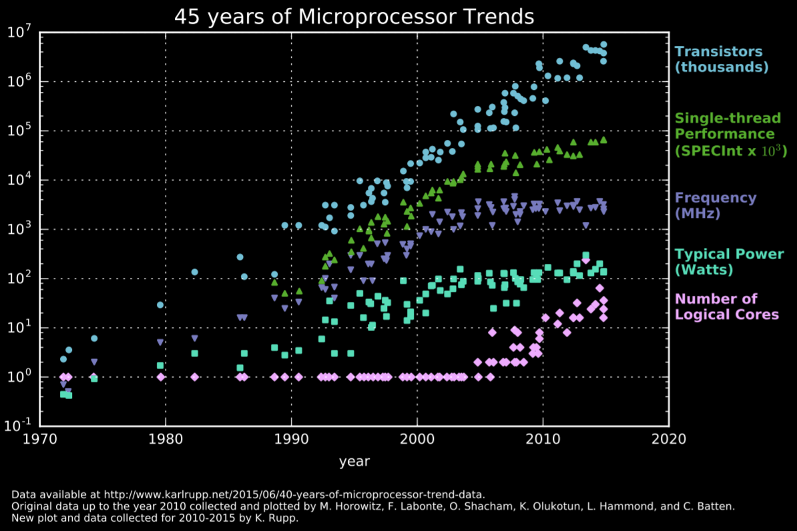

Before talking about domain-specific accelerators, we need to understand how general-purpose CPUs work. I recommend reading my “Building a Pipelined CPU Core” blog post, which gives you a brief overview on how simple pipelined in-order-execution scalar CPUs are designed, how instructions are fetched, decoded and executed. In any case, CPUs receive instructions from memory and those instructions tell it what to do with data. Instructions are usually extremely simple, they're things like “add this to that”, “move this there”, “take this and store it there”, you need multiple instructions to implement most algorithms and most of your useful programs will compile into several instructions, usually thousands of them.
The point is, general purpose CPUs are labelled “general purpose” because they do not have a fixed data path, the flow of data depends entirely on which instructions the CPU is receiving and what those instructions tell it to do. The instructions are decoded into control signals that change what the internal elements do, from where the data will go to telling the arithmetic unit to do addition instead of division, for example. They're designed like this because then you can run any program on it, you don't need a specific ASIC for every single logic operation you want to perform.
Modern CPUs employ a bunch of clever design decisions to help them execute instructions faster, like executing them in a pipelined fashion, executing several independent instructions in parallel and predicting branches ahead of time. Complex caching topologies have also emerged as a way to speed up things, considering memory access is probably one of the slowest single operations in a modern computer.
Likewise, microelectronics is a field that evolved so much during the 90s the CPUs went from operating at a few MHz to operating at a few GHz. The progress slowed down during the next decade, but Intel still managed to go from a 180nm process in 2000 down to 14nm in 2016. Fast paced progress didn't last forever though, their 10nm process was postponed several times due to technical issues and it's still not used in their desktop line of CPUs as of today (early 2021, 5 years later).

CPUs are still getting better, they just do it slowly relative to a few decades ago. We're living a transition from x86 to ARM and from the Intel/AMD duopoly back into a market with multiple players like it used to be before x86 took over. What's even more interesting though, is that CPUs are not even that important anymore when it comes to high performance computing, GPUs have easily taken the crown as the computing devices of choice for most tasks. But what is the difference between modern CPUs and GPUs? CPUs are built to execute a few threads extremely quickly, they're designed to find the parallelism within a thread and exploit it.
GPUs, on the other hand, are designed with massive parallelism in mind from the get go, they have much weaker processing “cores” but they also have way more of them in parallel. Thing is, most computational tasks can be heavily parallelised, especially those you find in scientific computing. Machine Learning has been a hot topic recently, but training any of the bigger models on a CPU would be extremely time consuming and non-feasible, GPUs offer you orders of magnitude better performance because ML usually boils down to millions of multiply-accumulate operations (with a lot of parallelisation opportunity).
But wait a minute, why do we even have GPUs anyway? Surely something named “Graphics Processing Unit” didn't show up to solve machine learning problems, right? Well, yeah. A GPU is our first example of domain-specific accelerator, it's literally a digital system designed to compute the intensity and colour of pixels, thousands of them multiple times each second. Try playing any 3D game while rendering it on your CPU, you'll probably get a nice slide-show. GPUs being good at ML came as a consequence of them being good at graphics, which is another field that's super easy to execute the computations in parallel.
Alright, now I think I can properly explain what domain-specific accelerators are. They're digital systems designed to execute a specific task very well. CPUs need to be good enough at everything, but DSAs can be absolutely horrible at almost everything as long as they're extremely good at a single specific thing. Their circuits are designed with a single problem in mind. Google has designed a few DSAs in the last few years, the Tensor-Processing-Unit (Google TPU) and the Pixel-Visual-Core being the most important ones. The TPU was made to train neural networks more efficiently than GPUs, its architecture was designed with ML in mind from the ground up.
Likewise, the PVC was built for CNN inference so they could use ML techniques to improve the picture quality in their Pixel line of phones, especially in HDR mode. Due to the sheer number of operations, even inference is usually too slow to be done on CPUs if you want to do something in real-time without noticeable slow-downs.
Well-designed DSAs should always outperform CPUs and GPUs, but they're usually not as straightforward to program. Some DSAs have fixed paths and can literally only do a single thing. As an example, most modern SoCs have a few IP blocks dedicated to decoding video/audio codecs like H.264/AVC and H.265/HEVC. On another hand, a CNN accelerator needs to be able to “compute” different CNN architectures, because various things like kernel sizes and number of layers can easily change between different networks. Usually speaking, the issue with flexible DSAs is that programming them isn't nearly as trivial as programming CPUs.
It's the exact same issue FPGAs have had forever, when you design a digital circuit from the ground up to be synthesised into an FPGA, the design process is relatively straightforward. It is difficult and might be a real challenge depending on what you want to build, but it's straightforward nonetheless. What's really confusing, and usually the problem, is that people only think of using FPGAs when they see their program is too slow on their CPUs or GPUs, and then they want transform what's essentially software into hardware (for those of you who have never worked with FPGAs, you can think of them as a huge sea of logic gates you can wire the way you want). You can't do a matrix multiplication in a trivial manner like “C = A*B” like you'd do in something like MATLAB, you need to think of how you retrieve the data from memory, how you'll architecture the multiply-accumulate units, how many clock cycles you're willing to give to your operation to meet timing requirements, how many registers you'll need, etc. Porting software to FPGAs is not an easy task, but every single big player in the field has an HLS tool that “converts” C/C++ code into Verilog or VHDL. To further expand on this, a convolution between an image and a kernel, in software, requires you to loop through the image and for each pixel loop through the kernel performing multiplications and additions. If you attempt to do something like this on an FPGA, you'll likely end up with worse performance than just doing it on your CPU, since the CPU is perfectly capable of doing a single arithmetic operation per clock cycle and runs on much higher clock frequencies.
What you want to be doing instead is, doing the entire inner loop simultaneously with several parallel multiply and add units, and also perhaps doing several output pixels simultaneously with multiple instantiations of this higher-level element.
GPUs have only become somewhat “general-purpose” recently because we have giants like Nvidia and AMD making sure their products are generally well supported through drivers and several abstraction layers. Trying to understand what TensorFlow or PyTorch are doing when you train something on your CPU is already difficult enough, but CUDA and OpenCL do a lot of “magic” for you when you run them on your GPU.
Likewise, Google is responsible for coming up with ways of writing software to their accelerators. They've managed to make both TF and PyTorch able to offload the computational work to the TPUs, which means users like you and me can just do what we've always done but now it runs faster.
I've made a point out of how you can parallelise matrix multiplication because the TPU is essentially just a huge matrix multiply unit capable doing hundreds of operations every clock cycle.
Likewise, the PVS is capable of executing several convolutions simultaneously. Image convolution has the intrinsic quality of a sliding kernel that goes through the image in a loop, which means you'll be performing several operations with nearby pixels in the grid. For that reason, the PVS is designed in a way that it's possible to “shift” the data into any of the 4 directions, so you don't need to be reloading things from memory to change the pixel values getting multiplied by the kernel weights.
[1] Computer Architecture: A Quantitative Approach. by John L. Hennessy and David A. Patterson.
[2] https://cloud.google.com/tpu
[3] https://www.karlrupp.net/2018/02/42-years-of-microprocessor-trend-data/